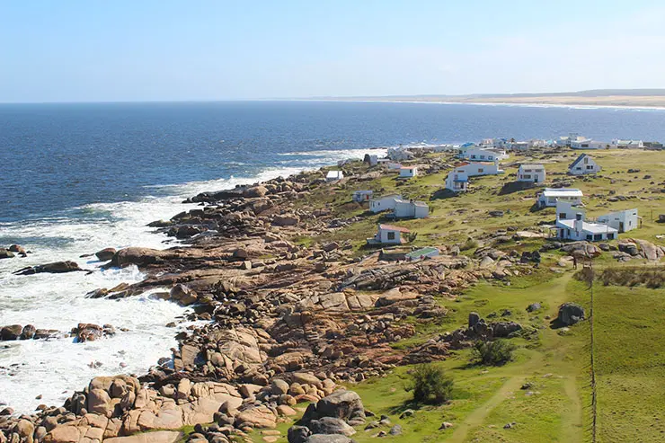
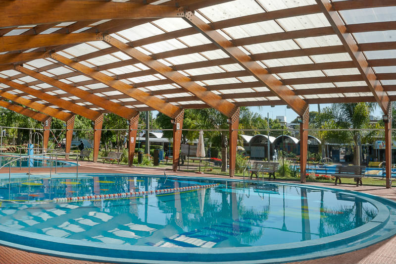

Os principais Pontos Turísticos do Uruguai são a sua capital Montevidéu, as luxuosas praias de Punta del Este e a cidade histórica de Colônia do Sacramento, considerada patrimônio da humanidade pela Unesco.

Outros locais também muito visitados – porém menos conhecidos – são as praias selvagens do departamento de Rocha como Cabo Polônio e Punta del Diablo. Além disso, também temos as outras praias do departamento de Maldonado como Piriápolis e José Ignacio.
A região das Termas, em Salto e Paysandú, com suas águas quentes, complexos de piscinas e hotéis de luxo, é uma regiao ainda pouco conhecida pelos brasileiros, mas muito frequentada pelos uruguaios, que aproveitam o inverno nos SPAs da região.
O turismo no Uruguai é bem desenvolvido. O país possui uma quantidade de hotéis e restaurantes, que atendem aos mais diversos tipos de público. O setor hoteleiro oferece desde cabanas mais simples, hotéis fazenda, pousadas, até grandes complexos de luxo, que garantem toda a comodidade para quem busca conforto.
costumes